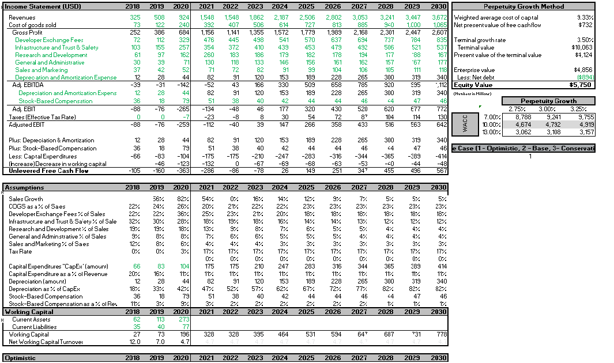

Awais Malik
Finance Student
I am currently a second-year Finance student at York University. I have experience in BDB and BDC sales. I also have experience in excel and data modeling software like tableau which I use to construct DCF models and guide my own investing decisions. I am currently pursuing my Canadian Secuities Course designation, and have recently completed my volume one exam
I love to keep up to date with market conditions and understand the driving factors in big changes in the market I love to test my skills and see what I am able to create, but I am also always ready to take on any new challenges that come my way.I am consistently looking for new opportunities to develop my skills so feel free to contact me if you want to chat or have any questions.
Featured Projects
Here are some projects I have created. Some projects are playable by clicking on View Project or on the image, and more information can be found on my Github.
Roblox DCF
A DCF cash flow model of Roblox based on their revenue and expenses schedule in their intial S-1 filing with randomized #s so you can alternate between a pessimistic, base and optimistic case and a senstivity valysis of varying growth rates and WACC values..
ViewTime Wonderland Portfolio Tracker
An excel tracker sheet that automatically updates everytime you open the file some basic lines of VBA. Tracking live crypto prices of cryptos AVAX-CAD and TIME-AVAX and projecting the return on my investment in different scenarios.
ViewExperience
More information can be found in my resume
Sales Representative
Pure Octane Marketing
May 2021 - August 2021
Sold FW1 auto detailing products and ZeMaas online ordering solutions.
- Sold FW1 Auto Detailing products to cold leads at company organized events
- Presented ZeMaas online ordering solutions to restaurants and business owners
- Maintained strong knowledge of all products, add-ons, pricing plans, promotions and product features
- Represented Pure Octane and partners in a professional manner to prospects and customers
Concession Manager
Pramount Fine Foods Center
Aug 2018 - June 2020
Operated a concession during staduim events after acquired under new management
- Effectively training and working in correspondence with new employees in company policy and procedures
- Ordered and stocked received food supplies, and equipment based on concession needs
- Ordered and stocked received food supplies, and equipment based on concession needs
- Operated cash register and credit card machine to process customer payments with data entry
Annual Speech Competition
Schulich Toastmasters
Septermber 2020
Designed and presented a speech on the topic of adversity through tough times and came top 5 overall
Education
York University
Finance, Honours, 2024
Cumulative GPA: 8.0/9.0